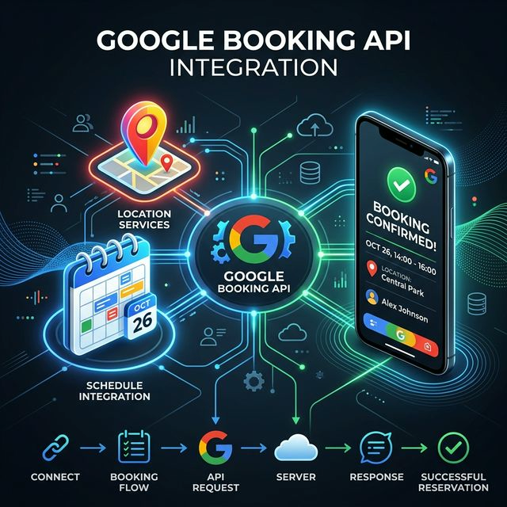
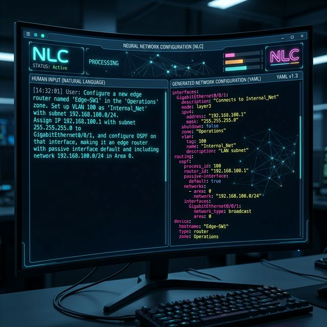
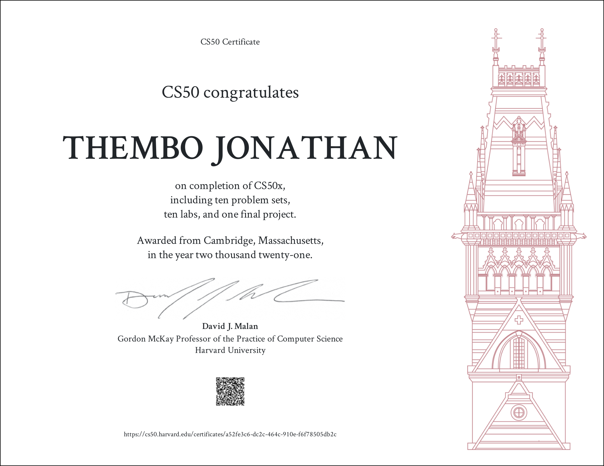

Portfolio
Featured projects and work

Google Booking API Integration
Led the end-to-end integration of Google Booking API (Reserve with Google) into a restaurant reservation system. Implemented feed export, booking server, and real-time updates for seamless synchronization across Google Maps, Search, and Assistant.
Enterprise FeatureSAP S/4HANA Integration Middleware
Architected and developed enterprise middleware linking web applications to SAP S/4HANA. Designed complex business partner APIs, optimized batch processing for large datasets, and implemented efficient data synchronization mechanisms.
Enterprise SoftwareHigh-Performance Geospatial System
Collaborated on a geospatial management system, reducing complex query response times by 60% through custom spatial indexing. Achieved 99.9% uptime with containerised deployments and designed clean-architecture RESTful endpoints.
Enterprise Software
AI-Driven Network Configuration
Contributed to a next-generation network configuration tool at Red Hat utilizing Natural Language Processing (nmstate). Participated in training LLMs to generate declarative YAML network states and designed testing interfaces.
View Upstream →Industrial IoT Protocol Engine
Contributed to the Eclipse Foundation's Node-WoT project, implementing and optimizing communication interfaces for critical industrial IoT protocols including MQTT, OPC-UA, CoAP, MBUS, and MODBUS.
View Project →Drug Absorption Prediction Model
Developed a machine learning pipeline to predict drug permeability through human intestinal cells (Caco2 model). The project enhances predictive modeling of drug absorption using binary classification and advanced feature engineering.
View Project →OpenMRS Draw On Body Diagram module
Frontend module for OpenMRS that enables physical patient documentation through visual image annotation. Part of Google Summer of Code 2023 contribution.
View Project →
CS50 - Introduction to Computer Science
Harvard University's introduction to computer science and programming covering C, Python, SQL, and web development. Completed comprehensive coursework and projects.
View Course →